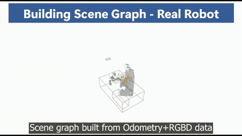
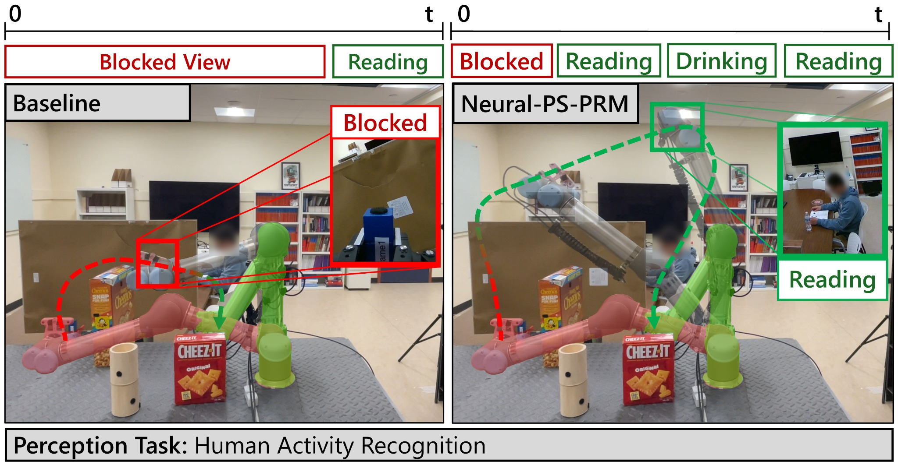
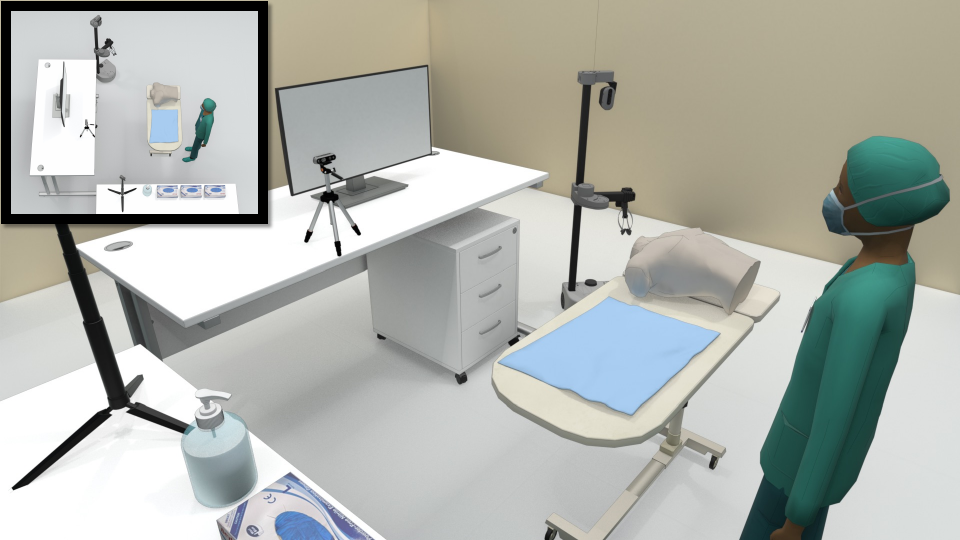

Ph.D. Candidate · Computer Science · Rice University
I am a fourth year Ph.D. student at Rice University advised by Prof. Lydia Kavraki and Prof. Vaibhav Unhelkar, and closely collaborating with Prof. Zak Kingston and Prof. Pam Qian.
My research interests include robot motion planning, robot perception, and human-robot interaction especially in medical environments.
Outside of research, I love hiking, cooking, and visiting museums.


